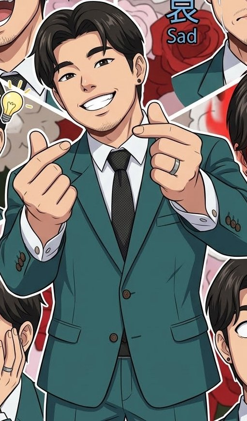

Sharp or Flat

Multiple-choice music challenge
Level
Choose the song that plays while you play the game.
Study the words and symbols
Study note names, symbols and values, then explore the six elements of music. The learning focus above controls foundation and extension vocabulary.
Pitch names: treble staff lines are E4, G4, B4, D5, F5; its spaces are F4, A4, C5, E5. Bass staff lines are G2, B2, D3, F3, A3; its spaces are A2, C3, E3, G3. Middle C (C4) is the only ledger-line pitch used in the quiz.
NSW syllabus alignment and sources
This supplementary literacy game uses the NSW Music 7–10 Syllabus (2024), implemented from 2026. Stage 4 is Years 7–8; Stage 5 is Years 9–10. Foundation/extension groupings here are teaching choices, not a prescribed NESA word list.
Pitch and rhythm notation, dynamics, expression and vocabulary support the musical-literacy knowledge used in Performing, Listening and Composing. Related outcomes are MU4-PER-01, MU4-LIS-01 and MU4-COM-01; Stage 5 links include MU5-PER-02, MU5-LIS-02 and MU5-COM-02.
A notation quiz does not assess these outcomes in full. Add live performance, listening analysis, composition, diverse repertoire and context work. This is not a NESA-endorsed or complete syllabus program.
NESA: syllabus and six elementshttps://curriculum.nsw.edu.au/learning-areas/creative-arts/music-7-10-2024/overview
NESA: Stage 4 and 5 outcomeshttps://curriculum.nsw.edu.au/learning-areas/creative-arts/music-7-10-2024/outcomes
NESA: music glossaryhttps://curriculum.nsw.edu.au/learning-areas/creative-arts/music-7-10-2024/glossary
Open Music Theory: reading clefshttps://pressbooks.nebraska.edu/openmusictheory/chapter/clefs/
Open Music Theory: note names, values and restshttps://pressbooks.nebraska.edu/openmusictheory/chapter/rhythmic-rest-values/
Open Music Theory: dynamics and articulationhttps://pressbooks.nebraska.edu/openmusictheory/chapter/other-aspects-of-notation/
All Classical: expressive termshttps://www.allclassical.org/music-terminology-101-expressive-terms/
Your music worksheet
Review the questions below, then download your printable PDF. On iPhone, use the PDF viewer’s Share menu to save or print it.